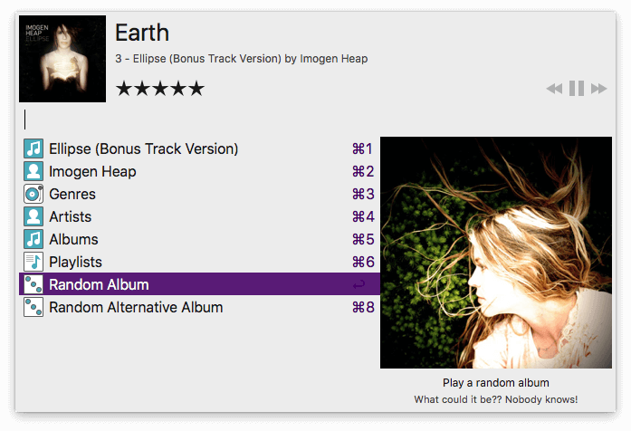
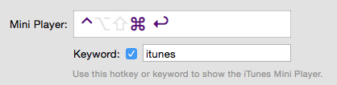
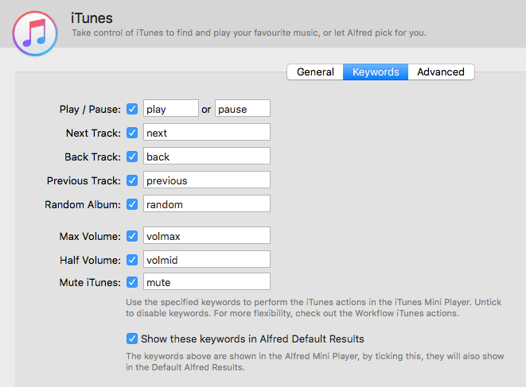

iTunes Mini Player
The iTunes Mini Player is a handy, mouse-free way to control your music collection. From playing your favourite albums and rating them to letting Alfred surprise you with a random album, there's much fun to be had with the Mini Player.
The iTunes Mini Player is a Powerpack feature.

Discover how to use the Mini Player:
- Using the Mini Player
- General iTunes Mini Player preferences
- Keywords and Hotkeys
- Advanced
- Troubleshooting the iTunes Mini Player
Using the Mini Player
Using iTunes 12 or higher? Launch iTunes' preferences > Advanced, and check the "Share iTunes Library XML with other applications" checkbox to ensure that iTunes makes its library available to Alfred.
To launch the iTunes Mini Player, type "itunes" in Alfred (or use the Cmd + Alt + Return default hotkey combination). Start typing the name of a song, album or artist, or navigate through the options underneath. You can browse your music collection using arrow keys or command + number.
Rating your music
You can rate your music collection, using stars and half stars. This rating will be visible in iTunes too. You can either use the mouse to set a star rating or type in "Ctrl + Cmd + number from 1 to 5".
Refreshing your music collection
If you add new music to your iTunes collection, use the ⌘ + R hotkey combination to reindex your iTunes library. Alfred will then check for newly added music and add it to the Mini Player.
Alfred also automatically rebuilds his own database of your iTunes music when you update to a new Alfred release.
General iTunes Mini Player Preferences
You can change your Mini Player hotkey and keyword in the General preferences.

You can also enable or disable the following settings:
- Playback: When randomising, only play larger albums
- Behaviour: Hide Mini Player after selecting song
- Searching: Include Playlists in Mini Player Search Results
iTunes Mini Player Keywords and Hotkeys
Under the iTunes > Keywords menu, you can view, customise and enable or disable the keywords used to control iTunes.
By default, these keywords are also shown in Alfred's default results, so typing "random" into Alfred's search box will start a new random album in iTunes, which is a fun way to start the day!

Below are the default hotkeys to browse your music while the Mini Player is active:
- ⌃ ⌘ ↓ Play / Pause
- ⌃ ⌘ → Next Track
- ⌃ ⌘ ← Back Track
- ⌃ ⌘ ↑ Play Random Album
- ⌃ ⌘ [0-5] Rate currently playing song from 0 to 5 stars
- backspace Go up a folder in iTunes Mini Player
- ⌘ r Reindex iTunes library
Want to control iTunes while the Mini Player isn't active? Take a look at the workflow actions to control iTunes
Advanced Preferences
In the advanced preferences, you'll find and be able to specify the iTunes Music Library XML file for Alfred to use. Usually, this file is found automatically, but if there are multiple instances on your Mac, you can specify which one Alfred should look at.
You can also specify whether unticked iTunes tracks, podcasts, movies and TV shows should be included in Alfred's Mini Player index.
If you've added music, the quickest way to update Alfred's file is to use ⌘ + R, but you can also press the "Reset Music Library" button here. "Reset Artwork" will refresh all album artwork cached by Alfred, which is useful if you've recently updated a lot of album art in iTunes.
The Predictability setting allows Alfred to create a playlist in iTunes to give a more predictable play order for an album.
Troubleshooting the iTunes Mini Player
If you're having trouble with the Mini Player and find that your songs are either not found, not playing or not in the expected order, take a look at the iTunes Mini Player troubleshooting page.